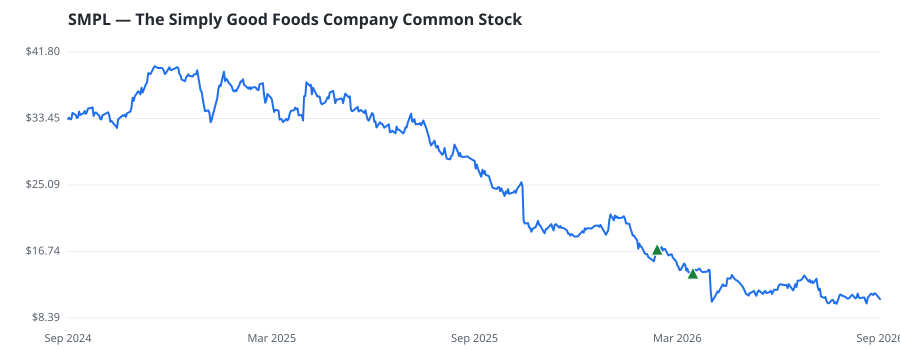

bullish · bearish · n/a — dots: price>SMA10 · SMA10>SMA50 · SMA50>SMA200 · up>down volume (20d)
Food, Beverage & Tobacco · small cap
Members who bought SMPL earned a dollar-weighted -30.7% from their disclosure dates, versus +12.4% for the S&P 500 over the same holding windows (-43.1% alpha).

▲ green = a disclosed purchase · ▼ red = a disclosed sale (plotted on disclosure date)
The Simply Good Foods Co Company is a consumer packaged food and beverage company that develops, markets, and sells protein bars, ready-to-drink protein shakes, sweet and salty snacks, and confectionery products under the Quest, Atkins, and OWYN brands. The products target consumers seeking protein-rich foods with limited sugars and carbohydrates, with OWYN offering plant-based and allergen-tested options. The company distributes mainly in North America through grocery, club, mass merchandise, e-commerce, and specialty channels. It operates two segments: Quest and Atkins, and OWYN. The company FOOD AND KINDRED PRODUCTS · website
| Revenue | $1.5B | Net income | $103.6M |
|---|---|---|---|
| Operating income | $156.9M | Diluted EPS | $1.02 |
| Assets | $2.4B | Equity | $1.8B |
| Member | Chamber | Out-performer | Disclosed buys $ | Return on buys |
|---|---|---|---|---|
| Tim Moore | house | yes | $73K | -30.7% |
Disclosed $ figures are bracket midpoints — filings report ranges (e.g. $1,001–$15,000), not exact amounts.